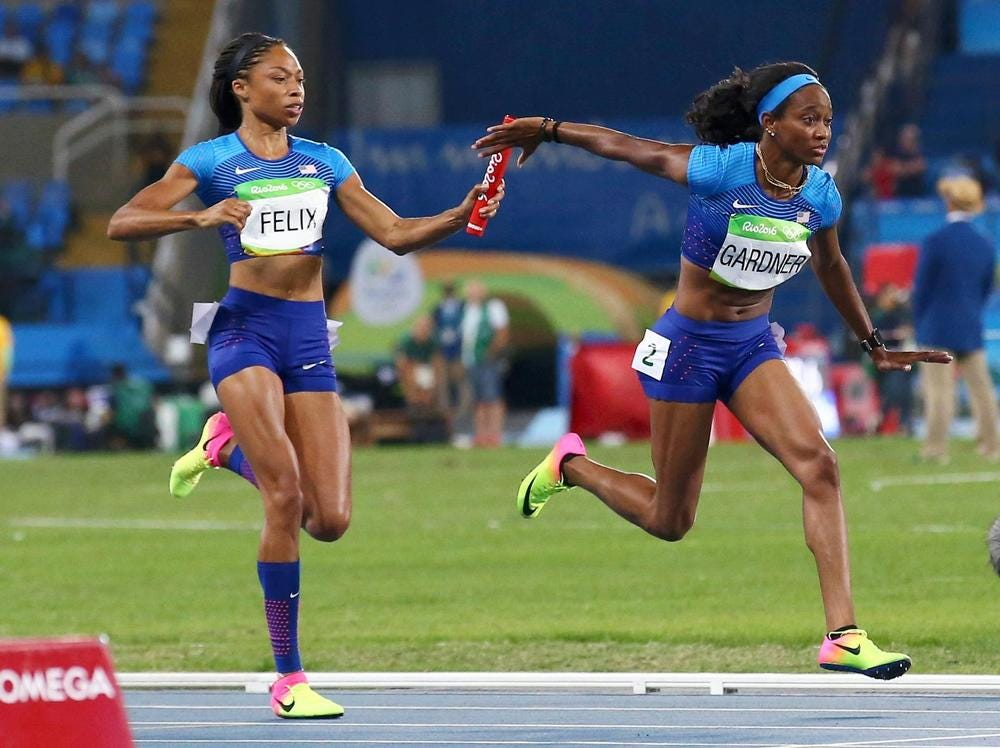

Why are you running?
Like an article about Competition and Contribution

I hope and wish that I am running for giving to the next the opportunity to have a head start even if we have seen some being successful with a handicap. Because it is always worth trying to give opportunity for others to succeed, I won't see you rely on the skills and potentials of the next one who will run after you for allowing yourself to run a bit slower than you can. I hope it is also valid for me.
Life and business are all about a relay sprint we run because we want the next others to be in a more comfortable situation for running faster. It is not about us but about the next others. I lent the vocabulary of Olympic athletes as material for an illustrative metaphor but here the verb run should mean for you way more than what it used to mean.
But I hope that you know more about competition and contribution and how these two pieces are ruling our society and what kind of persons, ideas, and solutions emerge from each of them. Better depend always on who makes the judgment but contribution is what I think is better at shaping a better world. Sometimes these two can live in the same space because with this metaphor of relay sprint you see that each team is competing against others but to win the best contribution of each of the members of the team is required. Contributing is just what I am doing with these words that you have read from me for you to take them for producing a better thing that could be other than an article on medium.
I had the idea of writing about contribution and competition ten hours before this article inspired by this picture below because for this tech-enabled air transportation product that I told you about in this article, I was looking for a picture of teams of relays sprint because this tech-enabled idea is very similar to relay sprint. I hope that you can remark that airline operations management like supply chain management is also similar to a relay sprint because timing and synchronization are important for them to be improved. While in front of the picture this motivational article came to my mind and I decided to write it and here as you see it really looks like that I am writing this article about competition and contribution. I could also say that reading and listening to Seth Godin and Adam grant helped me understand better these concepts of contribution and competition that I planned to write about. But just watching this picture below have produced all these words

In our networked world competition and contribution are amplified and have more importance in our societies than what they used to have. Then for me, it is important for you and me to know why we are running. For my part, I just came to think that the answer is that I am running for the next but I could be completely wrong with my answer.
If your another is different I would love to hear or read about it.
Thank you for reading, hope and wish you will succeed at what you set to achieve.
PS: Champions are more contributing than competing. This article can also be seen as an article of the Greyio Heart experiment because it clearly highlights women's talent.